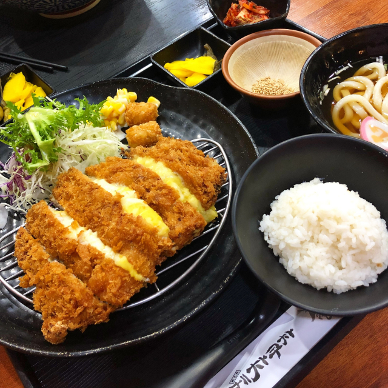

숙소가는길에 성욱이가 고치돈! 고치돈! 노래를 불렀는데여담이지만 성욱이가 세트를 시킬라다가 안시키니까
예슬이가 "어? 배고픈데 괜찮아?"라고했다.
그리고 성욱이가 "배고프면 여기 떡볶이 시키면 돼지"라고했다.
사실 일부러 마늘무시기 떡볶이 먹어보고 싶어서 그랬는데
양이 딱 맞아서 성욱이가 센스있게 안시킨것처럼 됐다 이마리야!
음하하! 예슬이는 꿈에도 몰랐겠지~!
| 아침 | 사라짐 |
| 점심 | 숙소로의 여정 |
| 저녁 | 기념촬영과 돈까쓰 |
| 새벽 | 부상투혼 소시지케챱볶음 |